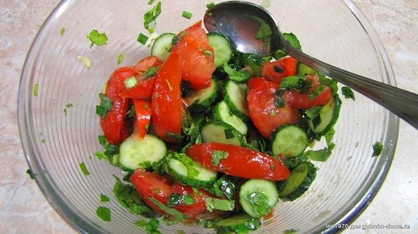
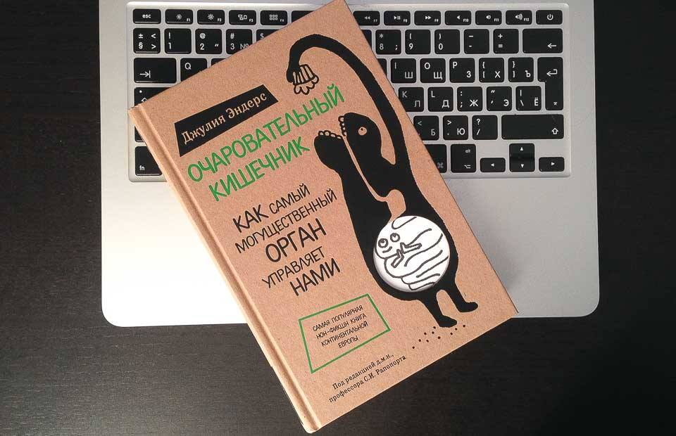

Огурцы и помидоры нельзя употреблять в пищу одновременно. Дело в том, что огурцы — щелочные продукты, а помидоры — кислые. При их смешивании в организме образуются соли, за которые ваши почки вас по голове не погладят. Это раз.

Помидоры вообще не сочетаются ни с одним из овощей. Если их употреблять в пищу с другими овощами, что-то будет перевариваться в первую очередь, а что-то начнёт внутри вас гнить. С образованием газов, конечно.
В-третьих, в помидорах содержится аскорбиновая кислота. Это отлично. Но при одновременном поглощении красных и зеленых плодов аскорбиновая кислота томатов будет убита ферментом аскорбиназой, содержащимся в огурцах.
И это я ещё не открывал купленную вчера книгу.
